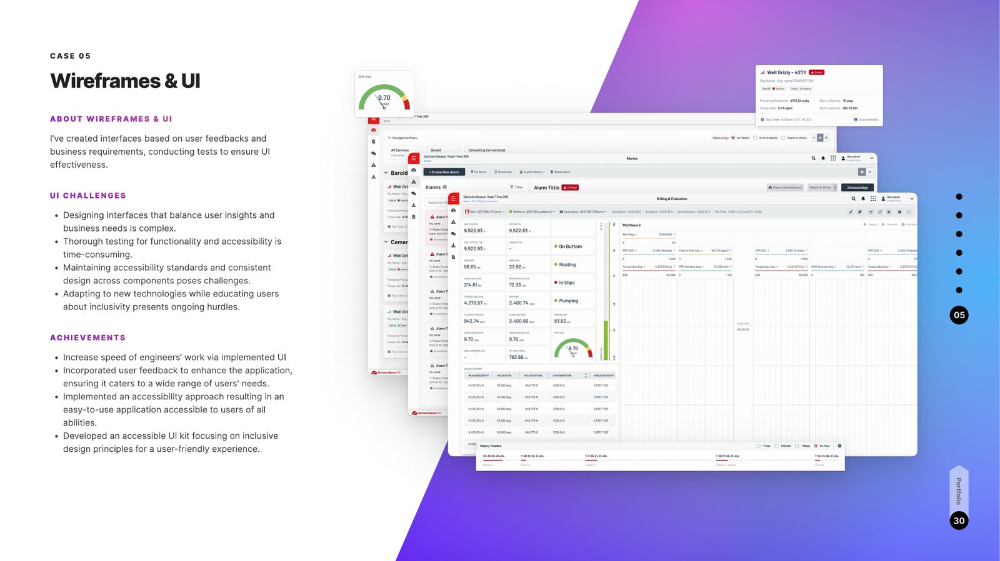

Cloud software ingesting large volumes of data from diverse sources — modular, plug-and-play, with intelligent workflows. Three user worlds (civil workers, support, engineers) had to collaborate in one accessible product under real-time data constraints.